time
وقت
We don't have much time.
ليس لدينا وقت كثير.
Units of Time
مرّر الماوس على السماعة أو اضغط عليها لتسمع النطق. السماعة الكبيرة نطق أمريكي (وهو المكتوب بالرموز)، وزر UK نطق بريطاني.
وقت
We don't have much time.
ليس لدينا وقت كثير.
لحظة
Please wait a moment.
من فضلك انتظر لحظة.

لحظة خاطفة
The lights went out in an instant.
انطفأت الأنوار في لحظة.
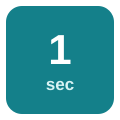
ثانية
It only takes a second.
لا يستغرق الأمر سوى ثانية.
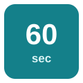
دقيقة
I'll be there in ten minutes.
سأكون هناك خلال عشر دقائق.
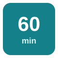
ساعة (60 دقيقة)
The flight takes about an hour.
تستغرق الرحلة نحو ساعة.
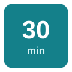
نصف ساعة
Dinner will be ready in half an hour.
سيكون العشاء جاهزًا خلال نصف ساعة.
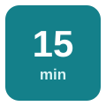
ربع ساعة
The bus comes every quarter of an hour.
تأتي الحافلة كل ربع ساعة.
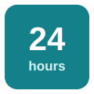
يوم
There are seven days in a week.
في الأسبوع سبعة أيام.
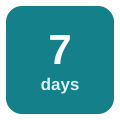
أسبوع
I go to the gym twice a week.
أذهب إلى النادي مرتين في الأسبوع.
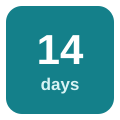
أسبوعان (بريطانية)
We're going on holiday for a fortnight.
سنذهب في عطلة لمدة أسبوعين.
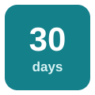
شهر
Rent is due at the start of each month.
يُستحق الإيجار في بداية كل شهر.
ربع سنة
Sales rose in the last quarter.
ارتفعت المبيعات في الربع الأخير.
فصل (من السنة)
Autumn is my favorite season.
الخريف فصلي المفضل.
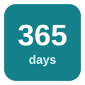
سنة
She has lived here for a year.
تعيش هنا منذ سنة.
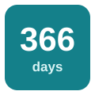
سنة كبيسة
February has 29 days in a leap year.
لشهر فبراير 29 يومًا في السنة الكبيسة.
عقد (10 سنوات)
Prices have doubled in a decade.
تضاعفت الأسعار خلال عقد.
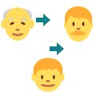
جيل
The recipe has passed down for generations.
انتقلت الوصفة عبر الأجيال.
قرن
This house was built in the last century.
بُني هذا البيت في القرن الماضي.
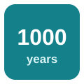
ألفية
The city is more than a millennium old.
عمر المدينة أكثر من ألف عام.
عصر / حقبة
We live in the digital era.
نعيش في العصر الرقمي.
عمر / عصر
He started working at the age of sixteen.
بدأ العمل في سن السادسة عشرة.
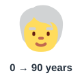
مدى الحياة
This is the chance of a lifetime.
هذه فرصة العمر.
الأبدية / وقت طويل جدًا
The wait felt like an eternity.
بدا الانتظار وكأنه دهر.
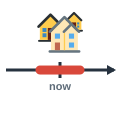
فترة
We lived there for a short period.
عشنا هناك لفترة قصيرة.
مدة
The duration of the course is six weeks.
مدة الدورة ستة أسابيع.
فاصل زمني
Take the tablets at regular intervals.
تناول الأقراص على فترات منتظمة.
ستسمع كلمة من كلمات الصفحة، فاضغط على الصورة التي تعبر عنها.
الكلمات المميزة هي كلمات هذه الصفحة. اضغط على أي كلمة ليبدأ الصوت منها ويكمل ما بعدها.
Do you have a moment? I want to ask you about your trip.
هل لديك لحظة؟ أريد أن أسألك عن رحلتك.
Sure, but only for a minute. My bus leaves in half an hour.
بالتأكيد، لكن لدقيقة واحدة فقط. حافلتي تغادر بعد نصف ساعة.
What is the duration of the course you're taking in London?
ما مدة الدورة التي ستحضرها في لندن؟
It lasts a fortnight. Classes run for an hour, with a short interval every quarter of an hour.
تستمر أسبوعين. مدة الحصص ساعة، مع فاصل قصير كل ربع ساعة.
That's perfect timing. Spring is a lovely season there.
هذا توقيت ممتاز. الربيع فصل جميل هناك.
I know. This is the chance of a lifetime! My family has wanted to visit for a whole generation.
أعلم. هذه فرصة العمر! أرادت عائلتي زيارتها منذ جيل كامل.
London has so much history. Some of its buildings are nearly a millennium old, and others are from the last century.
في لندن تاريخ عريق. بعض مبانيها عمرها نحو ألف عام، وبعضها من القرن الماضي.
I'd love to learn more about the Victorian era, that long period when the city changed so fast.
أود معرفة المزيد عن العصر الفيكتوري، تلك الفترة الطويلة التي تغيرت فيها المدينة بسرعة كبيرة.
My uncle moved there at the age of twenty. He has lived there for more than a decade.
انتقل عمي إلى هناك في سن العشرين، ويعيش هناك منذ أكثر من عقد.
Lucky him! How long does the flight take?
محظوظ! كم تستغرق الرحلة الجوية؟
About five hours. It feels like an eternity, but the first day passes in an instant.
نحو خمس ساعات. تبدو كأنها دهر، لكن اليوم الأول يمر في لمح البصر.
Is your office still busy this quarter?
هل مكتبك ما زال مشغولًا في هذا الربع من السنة؟
Very. Every week brings something new, and every month is harder than the last. It's the worst year I can remember, and it's a leap year, so we even work one extra day!
جدًا. كل أسبوع يحمل جديدًا، وكل شهر أصعب من سابقه. إنها أسوأ سنة أتذكرها، وهي سنة كبيسة، فنعمل يومًا إضافيًا أيضًا!
Time to go! Wait, one second, where's my passport?
حان وقت الذهاب! انتظر ثانية، أين جواز سفري؟
الكلمات المميزة هي كلمات هذه الصفحة. اضغط على أي كلمة ليبدأ الصوت منها ويكمل ما بعدها.
Time can be measured in many ways. The smallest unit we notice is the second, and sixty seconds make a minute. Sixty minutes make an hour, and we often talk about half an hour or a quarter of an hour when we make plans. Twenty-four hours make a day, seven days make a week, and two weeks make a fortnight, a word that is still common in Britain. A month has about thirty days, three months make a quarter, and each season of the year brings its own weather. A normal year has 365 days, but every four years we have a leap year with one extra day. Ten years make a decade, and a hundred years make a century. A thousand years make a millennium, which is far longer than any human lifetime. Each generation thinks that its own era is special, and every period of history has its great changes. Your age may be small compared with all of this, but do not feel sad. A single moment can change your life, and an instant of kindness can be remembered for an eternity. So the next time you plan the duration of a project, leave an interval to rest and enjoy your time.
يمكن قياس الوقت بطرق كثيرة. أصغر وحدة نلاحظها هي الثانية، وستون ثانية تصنع دقيقة. وستون دقيقة تصنع ساعة، وكثيرًا ما نتحدث عن نصف ساعة أو ربع ساعة عندما نضع خططنا. وأربع وعشرون ساعة تصنع يومًا، وسبعة أيام تصنع أسبوعًا، وأسبوعان يُسميان fortnight، وهي كلمة ما زالت شائعة في بريطانيا. وفي الشهر نحو ثلاثين يومًا، وثلاثة أشهر تصنع ربع سنة، ولكل فصل من فصول السنة طقسه الخاص. وفي السنة العادية 365 يومًا، لكن كل أربع سنوات تأتي سنة كبيسة بيوم إضافي. وعشر سنوات تصنع عقدًا، ومئة سنة تصنع قرنًا. وألف سنة تصنع ألفية، وهي أطول بكثير من أي عمر بشري. ويظن كل جيل أن عصره مميز، ولكل فترة من التاريخ تغيراتها الكبرى. قد يبدو عمرك صغيرًا مقارنة بكل هذا، لكن لا تحزن. فلحظة واحدة قد تغير حياتك، وومضة من اللطف قد تظل في الذاكرة إلى الأبد. لذا حين تخطط لمدة مشروعك القادم، اترك فاصلًا لتستريح وتستمتع بوقتك.